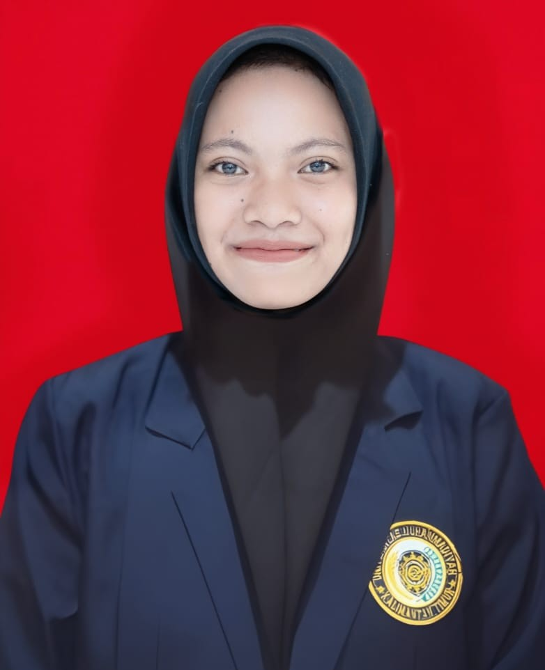

Saya adalah seorang mahasiswa Program Studi Teknik Informatika yang sedang menempuh pendidikan di perguruan tinggi. Saya memiliki ketertarikan terhadap dunia teknologi, khususnya komputer, pemrograman, dan perkembangan teknologi digital. Dalam keseharian, saya menjalani aktivitas sebagai mahasiswa dengan mengikuti perkuliahan, mengerjakan tugas, serta mempelajari berbagai materi yang berkaitan dengan bidang informatika. Saya cukup tertarik dengan hal-hal yang berhubungan dengan logika dan pemecahan masalah. Selama menjalani perkuliahan, saya juga mulai mengenal berbagai bahasa pemrograman dan aplikasi yang dapat membantu dalam proses belajar. Selain itu, saya berusaha memahami materi yang diberikan oleh dosen dan menyelesaikan tugas sesuai dengan kemampuan saya. Bagi saya, masa kuliah merupakan kesempatan untuk menambah wawasan, memperoleh pengalaman baru, dan mempersiapkan diri untuk menghadapi dunia kerja di masa depan. Saya berharap ilmu yang saya pelajari selama kuliah dapat bermanfaat bagi diri sendiri maupun orang lain.